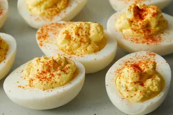

Recipes for eggs

Description
These deviled eggs are delicious for Easter brunch and are always popular at our holiday parties.
Adjust the amount of salt and sugar in this recipe to suit your taste. I like to add onion and celery for a little more texture.
Ingredients
These are the ingredients you will need for our special devil eggs.
- Eggs:You will need six boiled eggs.
- Mayonnaise:Use at least 500g of mayonnaise for extra creamy fillings.
- Mustard:You will need three table spoons of mustard.
- Seasonings:You will need salt, sugar and paprika.
Steps
These are the steps you need to follow to make our special devil eggs.
- Cut the boiled eggs in half and remove the yolks. Reserve the whites.
- Mash the yolks with a fork and add the remaining ingredients.
- Stuff or pipe the filling into the egg white halves.